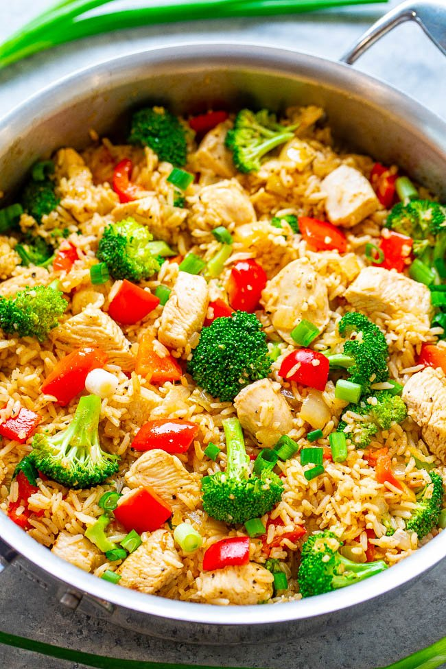

OMAD Chicken & Vegetable Skillet

Soooo I became the biggest chungus during a long bout of depression in my late 20s, and ballooned up to nearly 350lbs. In order to take back control of my health, I opted for a one
meal per day chicken skillet and would have it over either brown rice or some sort of asian noodles.
Ingredients
- 1 Chicken Breast
- 1 Large Onion
- 1-2 Bell Peppers
- 1-2 Broccoli Crowns
- 1-2c Mushrooms
- 2-3 Cloves of Garlic
- Lime Juice to taste
- Garlic & Chili Sauce (ie Sriracha) to taste
Now, you'll notice some variances in this recipe's ingredients. The thing is, because I was treating this as my single meal for the day, I changed it up in small ways every day depending
on what ingredients I had at hand, what style of dish I wanted, and what kind of veg I wanted to drive into my guts. A lot of the time, I would substitute the lime juice for a
mixture of soy sauce, hoisin, and oyster sauce. With that being said, treat this recipe as a template to build off of.
Steps
- Mis en place, people! Get your onion and garlic diced, and the rest of your veg and chicken all chopped into bite-sized pieces.
- Start off by sauteeing your onions on med-high heat until they are translucent, or continue until they're fully caramelized. Either is good!
- Add garlic, stirring for another 30s, then remove the mixture into a bowl for now.
- Add your chicken breast, cook to desired done-ness and add to the bowl with your onions and garlic.
- Throw in the rest of your veg, sautee until cooked to your liking.
- Add back in your chicken, onion, and garlic mixture, and add your lime juice and sriracha.
- Once everything's coated, serve over rice or noodles.